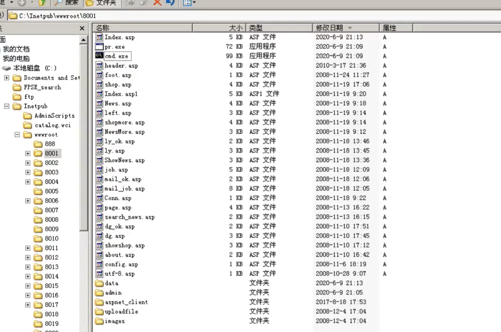
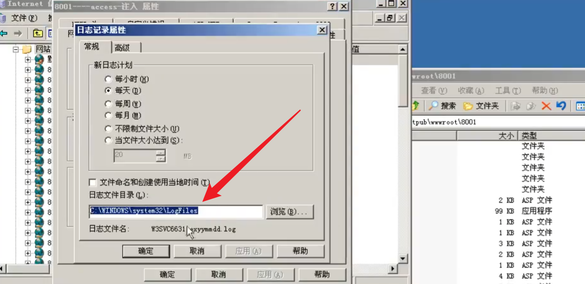
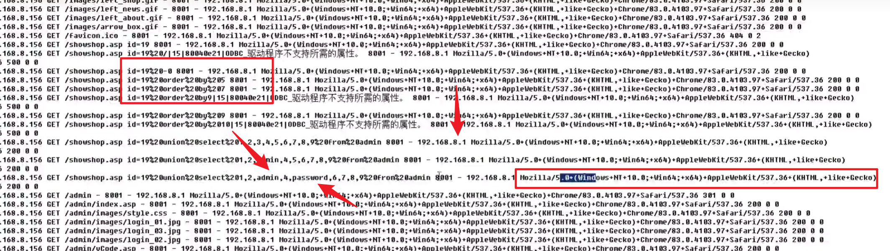
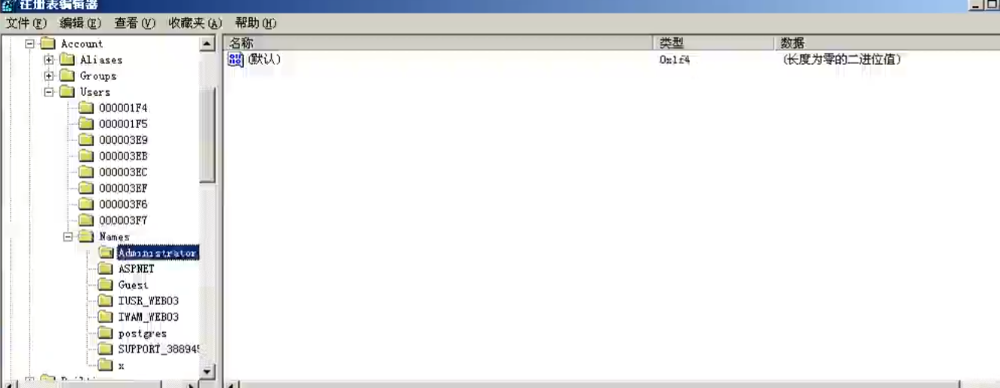
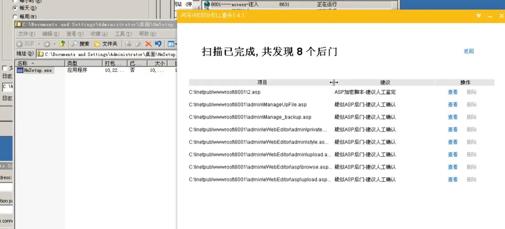
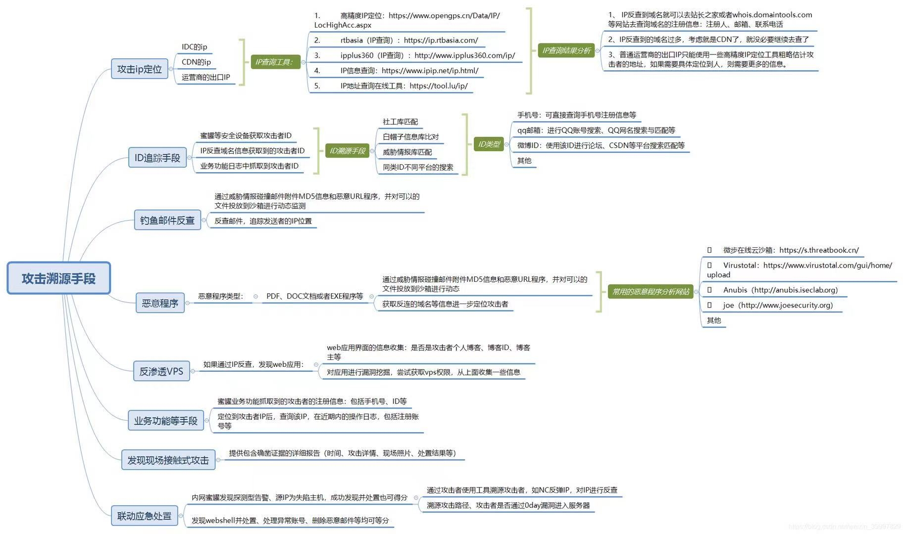

Windows 溯源
假如黑客渗透进来的话，危害：
- 数据泄露
- 网页被篡改（挂了一些 bc，黑页，黑链，做了劫持等等）
- 商城 金额 订单被篡改
溯源：追踪黑客来源
-
分析服务器，它的网络服务。（开放的网络端口）
21、3389、445、443、80、3306、8080
-
分析服务被攻击的方法，比如就上面的端口来说：被爆破、欺骗、钓鱼、漏洞利用（检测服务器的补丁情况）
web服务器（有 web 的一定要重点分析 web 服务，因为漏洞多，容易被黑客入侵）
-
分析 owasp top 10 漏洞（注入，上传，xss 等相关漏洞）
看日志文件
看文件查找上传的 webshell（使用 webshell 扫描工具加网络日志来分析）
分析网站数据库连接账号权限
分析网站容器权限
如果被提权了：
-
查看补丁
-
查看账号情况（分析一下注册表，因为攻击者可以通过克隆管理员账号来进行提权，也可以直接创建一个账号加入管理员组）
-
查看网络链接（查看会话）
-
分析进程
-
分析注册表启动程序
-
分析日志来获取
-
分析一些提权工具（漏洞利用程序，执行对比命令，mimikatz 读取 hash 的工具等等）
这些工具一般都会被上传到网站目录下或者是回收站（看攻击者的习惯）
应急需求有哪些分类：
- 被谁入侵了？------------- 攻击IP、攻击者信息
- 怎么入侵的？------------- 入侵时间轴、漏洞信息
- 为什么被入侵？------------- 行业特性、数据信息、漏洞信息
- 数据是否被窃取？------------- 日志审计
- 怎么办？------------- 隔离、排查分析、删马（解密）、加固、新运营
得到黑客攻击的路径进行修补：
- 如果是电商的话，这种是不可以通过关机来应急的
- 如果允许的情况下，可以关闭外网，然后进行分析（断网）
现在我们分析一个真实的案例：交易所，黑客链接我，他有 webshell 同时可以利用这个来修改数据库，还可以给自己加比特币，当我们遇到这种情况的时候，应该怎么办？
首先我们需要切断 hacker 的控制，先把网站的权限封死，不能穿越其他目录
然后修改数据库的连接密码，关闭外联，因为数据库密码已经修改，并且网站权限被封死，一旦切断外联，黑客就会与数据库断联，但是密码已经被修改所以他连不上，想通过其他办法比如脚本来修改密码但是网站的权限被锁死
分析日志，因为现在网站被封死了，并且黑客已经断联，所以他肯定要去找自己的 webshell，这个过程就会留下日志，所以我们可以分析一下日志来找到黑客 webshell 存放的位置
当我们在日志里面发现可疑 IP 之后，立马开始检索这个 IP，看看它访问的其他文件，因为黑客一般都会留有多个后门
根据文件内容锁定 webshell，当我们找到了黑客的 webshell之后，我们就可以通过这个 webshell 里面的内容检索，看看有没有其他文件写有相同的内容，以此来找到其他的马
因为黑客是会切换 IP 的，但是文件内容不会变，所以可以依据文件内容来查找
根据文件上传时间，来检索这个时间段（上下可以24h）内被修改上传的文件
那如果我们是黑客，如何隐藏后门：
- 上传免杀的webshell
- 上传不同目录，不同名称，不同内容的 webshell
- 不同时间间隔，不同的 IP 来上传
这就叫见招拆招
事件分类
- 常见的安全事件：
- Web入侵：挂马、篡改、Webshell
- 系统入侵：系统异常、RDP爆破、SSH爆破、主机漏洞
- 病毒木马：远控、后门、勒索软件
- 信息泄漏：刷库、数据库登录（弱口令）
- 网络流量：频繁发包、批量请求、DDoS攻击
排查思路
- 一个常规的入侵事件后的系统排查思路：
-
文件分析
- 文件日期、新增文件、可疑/异常文件、最近使用文件、浏览器下载文件
- Webshell 排查与分析
- 核心应用关联目录文件分析
-
进程分析
- 当前活动进程 & 远程连接
- 启动进程 & 计划任务
- 进程工具分析
- Windows: Pchunter
- Linux: Chkrootkit&Rkhunter
这里我们以一个实际案例进行解释：
首先我们可以根据修改时间来看看那些文件是最近被修改的

还要看一下可以上传文件的目录里面有什么文件，里面可能就会存在黑客上传的 webshell，然后就是查看网站的日志文件

在日志里面就可以看到攻击者的操作以及 IP 和客户端的类型

除此之外，我们还可以查看一下用户有没有变多，管理员组里面有没有多出用户等等，然后就是查看注册表，可以查看一下管理员的 F 值有没有被克隆给其他人

然后我们可以尝试使用 webshell 扫描工具对网站进行扫描，比如说：D盾、河马，可以多个工具一起用

还可以使用命令进行检索：findstr /s /m /l "2.asp" *.log ，这个就是找到含有2.asp的关键字的日志文件
- findstr ：Windows 命令行工具，用于搜索字符串。
- 选项说明
- /s：不区分大小写。
- /m：使用正则表达式进行模式搜索。
- /l：区分大小写，默认是区分大小写。
- 搜索字符串： “2.asp”`。
- 匹配文件类型：
*.log，表示匹配日志文件。
Linux 溯源
Linux 溯源一般来说比较简单一点，因为黑客大部分都停留在 webshell 阶段，很少有提权成功的
比如说 redis 服务就可以用来提权，所以说我们想看 Linux 被人拿到 webshell 有没有被提权，我们除了可以分析一下登录日志文件之外，还可以看一下 Linux 服务器里面开放的服务中权限有没有是 root 的，如果有是以 root 权限运行的服务，注意检测有没有被提权的可能性，通过内核提权的几率其实不高，通过劫持高权限服务进行提权的几率其实更高，还有就是劫持 suid，高权限的命令
文件分析
-
可以对敏感目录的文件进行分析（类
/tmp目录，命令目录/usr/bin/usr/sbin）例如：-
查看 tmp 目录下的文件：
ls -alt /tmp/ -
查看开机启动项内容：
ls -alt /etc/init.d/ -
查看指定目录下文件时间的排序：
ls -alt | head -n 10 -
针对可疑文件可以使用 stat 进行创建修改时间、访问时间的详细查看，若修改时间距离事件日期接近，有线性关联，说明可能被篡改或者其他。
-
-
新增文件分析
-
例如要查找 24小时内被修改的JSP文件：
find ./ -mtime 0 -name "*.jsp"-mtime是 用来指定文件修改时间的选项，数字0表示在过去24小时内被修改的文件，即从当前时间算起，距离最后一次修改时间小于1天的文件，如果改为1，则表示修改时间为1到2天之前的文件；如果是-1，则表示修改时间在1天以内 -
查找 72小时内新增的文件：
find / -ctime -3-ctime：-ctime是一个选项，用于指定根据文件的 变更时间（Change Time） 来查找文件。- 变更时间指的是文件的元数据（如权限、所有者等）或内容最后一次被修改的时间。
-3：- 数字
-3表示在过去 3天内 创建或变更过的文件。 - 如果写成
+3，则表示超过3天前创建或变更的文件。 - 如果写成
3，则表示正好在3天前创建或变更的文件。
- 数字
-
根据确定时间去反推变更的文件：
ls -al /tmp | grep "Feb 27"
-
-
特殊权限的文件
- 查找 777 的权限的文件：
find / *.jsp -perm 4777
- 查找 777 的权限的文件：
-
隐藏的文件（以 “.” 开头的具有隐藏属性的文件）
-
在文件分析过程中，手工排查频率较高的命令是
find grep ls核心目的是为了关联推理出可疑文件。
atime(Access Time)
- 含义：表示文件的 最后访问时间，即文件内容最后一次被读取的时间。
- 触发条件：当文件的内容被读取时（例如通过
cat、less或其他命令读取文件内容），atime会被更新。- 注意：
- 如果只是查看文件的元数据（如使用
ls -l查看文件信息），并不会更新atime。- 在某些系统中，为了提高性能，默认可能不会频繁更新
atime（可以通过挂载选项控制，例如noatime）。
mtime(Modify Time)
- 含义：表示文件的 最后修改时间，即文件内容最后一次被修改的时间。
- 触发条件：当文件的内容发生变化时（例如编辑文件、追加内容或覆盖写入），
mtime会被更新。- 注意：修改文件内容的操作会同时更新
mtime和ctime，但不会更新atime（除非文件被读取）。
ctime(Change Time)
- 含义：表示文件的 最后变更时间，即文件的 元数据 或 内容 最后一次被更改的时间。
- 触发条件：
- 当文件的元数据（如权限、所有者、组等）或文件内容发生变化时，
ctime会被更新。- 具体包括以下操作：
- 修改文件内容（影响
mtime和ctime）。- 修改文件权限（
chmod）。- 更改文件的所有者或组（
chown或chgrp）。- 文件被重命名或移动到同一文件系统内的其他位置。
- 注意：
ctime是最敏感的时间戳，因为它会随着任何文件属性的变化而更新。
总结对比：
时间戳 含义 触发条件 atime文件内容最后一次被访问的时间 文件内容被读取时更新 mtime文件内容最后一次被修改的时间 文件内容发生变化时更新 ctime文件元数据或内容最后一次被更改的时间 文件内容或元数据（如权限、所有者等）发生变化时更新
